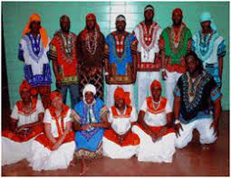

Significado y representación del traje típico de Izabal
Es el departamento de Guatemala que le da salida al Atlántico y en donde predominan los garífunas, que es uno de los cuatro grupos étnicos de nuestro país. A pesar de que Izabal no cuenta con un traje típico tradicional maya, se puede ver que los garífunas utilizan un traje que los distingue, ya que usan vestidos variados con su paño en la cabeza, lo que lo hace un traje propio mde la región. Además, hay que hacer énfasis que por la temperatura alta del lugar, el traje o vestido que utilizan en este lugar es bastante delgado y sujetado por cordones o botones.